Símbolo de sustitución.
Símbolo de sustitución.He llamado núcleo geométrico a la estructura que “soporta” el diseño del grafismo y sus formas, al alma estructural implícita la mayoría de las ocasiones y que se torna invisible a nuestros ojos a simple vista. Para descubrir este núcleo debemos ir capa por capa hasta llegar a él, para evidenciarlo y descubrir su importancia en el diseño de sus formas en la identidad marcaria.
Primera capa, La identidad.
“Etimológicamente, el término “identidad” viene de ídem, que significa “idéntico a sí mismo”. La identidad -de cosas, personas y organizaciones- se define por medio de tres parámetros: qué es (o quién es), qué hace (y para qué sirve) y dónde está (lugar u origen). Cualquier cosa que está en nuestro entorno se puede aislar en una unidad perceptiva que nos define qué es, qué hace o significa, y qué lugar ocupa. Estas tres percepciones se dan en una sola” (Costa, 2006)
Todos los individuos tenemos una identidad y todos tenemos una individualidad. En principio sabemos que no hay, ni ha habido sobre la tierra otra persona idéntica a nosotros, parecida sí, pero nunca igual. Así que somos únicos ya sea por algún rasgo en los ojos, en el tamaño de nuestra cabeza o en nuestro lenguaje silencioso, los ademanes. Nuestras costumbres y nuestro lenguaje nos otorgan una identidad geográfica y los colores e historia de nuestra bandera una identidad nacional. El atuendo nos etiqueta como un chavo banda o como un exitoso empresario; el lenguaje y el léxico nos dice si es un “ñero” o intelectual. En fin, que por el simple hecho de existir, adquirimos una identidad.
Lo mismo ocurre con las empresas, con sus productos y con sus servicios. De acuerdo con Joan Costa en su curso On-Line sobre la creación y gestión de marcas (2006), cinco son los elementos estructurales que crean identidad marcaria, estos son:
Sin embargo estos 5 (que sólo corresponden a la gestión de las causas) no son los únicos, lo que nosotros llamamos “identidad” para el público es un término abstracto, ellos lo reconocen con el término de imagen o lo que la gente cree que es la marca, misma que tiene dos niveles:
Segunda capa. La identidad marcaria.
La marca o marcaje se inventa para diferenciar cosas, productos, personas y animales por un principio de identificación/diferenciación particular. Incluso ya en la antigüedad personas de ciertas tribus se marcaban a través de cortes o tatuajes en la piel. Se marcaba a los esclavos, a las mercancías y a las reces. “La marca comercial es fruto de la evolución histórica. Su verdadero origen está en la Edad Media, especialmente en el funcionamiento del sistema corporativo propio de esa época referido a la forma de organización socio laboral inspirada en las corporaciones y gremios medievales –el corporativismo- que consiste en organizar a la sociedad en sectores productivos y no por el modo de integración de la producción” (Chaves, 1988). “Todo ello manifiesta una actividad económica basada en el intercambio de bienes materiales, artesanales e industriales” (Costa, 1990).
Según Joan Costa en las economías de mercado del siglo XXI, la marca es el activo más importante de una empresa, y es bien sabido que las empresas fabrican productos y las personas consumen marcas o la propia imagen mental que ésta evoca en el imaginario colectivo del consumidor.
Podrán coexistir dos productos con las mismas características, pero nunca dos marcas iguales, así mismo la marca puede existir sin una grafía, pero la grafía no existe sin un nombre; en principio se necesita de un nombre de marca para poder distinguir a un producto o servicio a través de este signo verbal, logrando así verbalizar el nombre a favor o en contra del mismo.
En el mismo orden encontramos a la grafía, que no es otra cosa que la forma diseñada del nombre (o su dimensión visible), es un signo lingüístico que al mismo tiempo que se auto identifica a través de ciertos rasgos, la distingue de todas las demás, por lo que primero es el logos, idea o palabra de base y después la forma visual, por lo tanto ambos signos el verbal y el visual son la materia y esencia misma que da inicio a la marca.
Dejaremos a un lado los conceptos relativos a la marca para acercarnos cada vez más a los temas que le darán sustancia y contenido al núcleo geométrico del diseño de la identidad marcaria.
Tercera capa. El diseño geométrico en la naturaleza.
Difícilmente notamos que en aquella manzana que desayunamos el día de hoy, en su base se forme perfectamente la figura de un pentágono; ni tampoco notamos que una piña, antes de ser cortada en rebanadas posee sobre su rugosa piel el diseño natural de una espiral geométrica similar a la del girasol. Pero aún más conocido es la misma espiral que se encuentra en el interior de algunos caracoles marinos. ¿Coincidencia? Las formas geométricas han acompañado por siempre el entorno visual del ser humano, no es casualidad que la persistencia del orden cósmico en nosotros nos de la preferencia por lo simétrico en lugar de lo asimétrico, la geometría es matemática pura y las matemáticas son el lenguaje universal.
Revista ¡Despertad! Septiembre de 2006
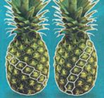 Piñas.
Revista ¡Despertad! Septiembre de 2006
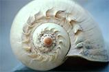 Caracola.
http://www.portalterraluz.com/fotos/1124563704.jpg
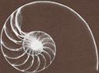 Concha Nautilus.
“La espiral logarítmica vinculada a los rectángulos áureos gobierna el crecimiento armónico de muchas formas vegetales (flores y frutos) y animales (conchas de moluscos), aquellas en las que la forma se mantiene invariante”
http://www.juntadeandalucia.es/averroes/recursos_informaticos/concurso2002/alumnado/img/caracola2.gif
Cuarta capa. Las aplicaciones y las relaciones geométricas.
Existen abundantes ejemplos sobre el tema, tanto en la actualidad como en las culturas de la antigüedad, y que van desde el diseño de mosaicos, hasta la arquitectura, las bellas artes y el diseño. Leonardo DaVinci afirmó que en su “Esquema de proporciones del ser humano” basado en el Número de Oro y también conocido como Razón Áurea, distintas relaciones que existen entre esto y los individuos.
Fue Pitágoras quien descubrió las relaciones matemáticas en la siguiente figura y su relación proporcional entre las líneas que la conforman y el punto de oro:
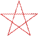
En la siguiente imagen las dos líneas pequeñas combinadas c y d igualan a b y esta a su vez muestra las proporciones de la famosa proporción áurea o “La Divina Proporción”
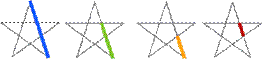
a b c d
Ejemplificando lo anterior, en el siguiente ejemplo podremos ver el resultado de la suma de c más d y b más c que también nos da la misma proporción áurea e igualando esta última en tamaño a la línea a.
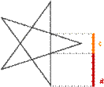 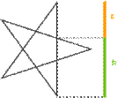
Esta proporción busca y produce compositivamente una estilización de la figura hacia “La Belleza Divina”. Algunas aplicaciones prácticas las observamos en la Venus de Boticheli o en el diseño de un cartel cinematográfico.
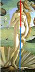 http://descartes.cnice.mecd.es/Geometria/belleza/Belleza_aux/acineva.gif
http://descartes.cnice.mecd.es/Geometria/belleza/Belleza_aux/araquelwelch2.gif
Además partiendo de esta figura geométrica (la estrella de David) es posible trazar el rectángulo de oro o rectángulo áureo, admirado por sus proporciones y sus cualidades compositivas.
La siguiente sucesión de imágenes lo representa en detalle:
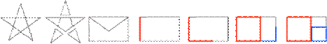
Fidas fue el arquitecto que diseñó el Partenón, mandado a construir por Pericles en honor a la diosa Atenea en el periodo conocido como el de la Grecia Clásica. Esta magnífica obra arquitectónica basa sus dimensiones en el número y rectángulo áureo, tal y como a continuación puede verse:
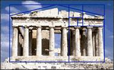
http://personal.telefonica.terra.es/web/imarti22/actividades/actividades/numero/marco_numero21.htm
Quinta capa. La estructura geométrica en las artes plásticas.
Se piensa que en la plástica el artista plasma aleatoriamente su trabajo sobre el lienzo, sobre cómo ve y planea los trazos sobre la superficie es una actitud meramente personal e individualista, sin embargo, la geometría casi siempre se presenta en su obra, sea de manera intencionada o no. En algunas obras esta geometría se presenta ante los ojos de manera natural como en las geometrías e ilusiones ópticas del pintor húngaro-francés Victor Vasarely o en las repeticiones de Escher, en algunas otras como en pinturas de Alberto Durero, hay que buscar con más cuidado las relaciones entre la obra, la disposición de los elementos y la geometría que los aglutina. Pero en otras como en Las Flauta de Pan de Pablo Picasso esas relaciones pueden parecer inexistentes, sin embargo en esta obra en particular se presentan un gran número de situaciones extraordinarias y que a continuación trataré de exponer de la forma más sencilla que me sea posible.
A simple vista y para el observador ocasional la obra no “muestra” nada más allá de lo que las imágenes, las formas y el color transmiten a simple vista; pero para el ojo reflexivo y para el observador cuidadoso se podrá apreciar una composición que guía la vista más allá de las líneas horizontales, verticales y diagonales de la pintura.
Haciendo un primer análisis o una disección más profunda que nos permita ver las entrañas de la obra, encontraremos que en ambos extremos se ubican dos muros casi de la misma proporción, y por la angulación en su parte superior guían la vista hacia la parte superior de color azul.
Muro izquierdo y derecho
Fondo azul
Rectángulos
[Especificaciones de la obra: Título de la obra.- La flauta de pan. Autor.- Pablo Picasso. Dimensiones.- 205 x 184 cm. Técnica.- óleo pintada sobre tela. Fecha de realización.- 1923].
Al centro y atrás de los dos personajes quienes son los elementos en primer plano y los de mayor importancia, se encuentra un rectángulo y frente a éste se observan dos elementos que hacen de cajones en donde el personaje que toca la flauta se encuentra sentado. Todas las líneas perceptibles me llevan a suponer que existe una trama estructurada que “sostiene” la composición. ¿Existe algún criterio formal específico que el autor haya decidido emplear al pintar este cuadro? Asombrosamente el trazo y la división de la obra son más complejos e interesantes de lo que aparenta. En la lectura de las siguientes tres láminas puede notarse y verse lo siguiente:
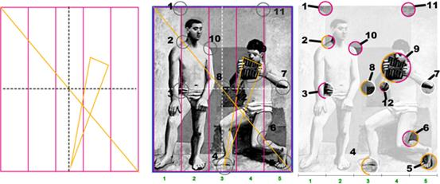
Los muros colocados a los costados dividen el formato en 5 partes iguales (línea color magenta) y la línea punteada divide la pintura en 4 partes iguales (de color negro en la imagen de la izquierda y de color blanco en la del centro) que coinciden con ciertos puntos importantes.
La diagonal (línea color amarillo) que parte del ángulo superior izquierdo al inferior derecho juega también un papel importante, además vea las líneas de la flauta prolongarse y coincidir al centro de la base del formato, exactamente a la mitad de la tercera de las 5 divisiones verticales (numeración en verde). Para hacerlo aún más explícito he numerado y encerrado las “coincidencias” dentro de un círculo así que usted mismo podrá revisar punto a punto cada una de ellas, e incluso descubrir las que no hice evidentes para no caer aún en un exceso mayor.
En la siguiente ilustración se aprecia como el pentágono envuelve a ciertas figuras dentro de su geometría y otras como el cajón sobre el que el flautista está ubicado y exactamente a la mitad del mismo, se ubican el inicio de la cabeza y la parte superior de este cajón. Véase también como la línea punteada vertical también de color rojo continúa la vertical del muro y a su vez la división entre el brazo y el costado del torso del personaje.
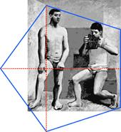 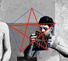
Al lado derecho tenemos un detalle en donde también podemos ver como el pentágono delimita ciertos puntos clave tales como la distancia del hombro izquierdo del personaje con el muro derecho (lo que nos da la proporción del pentágono) el costado y la parte baja de la flauta corresponden a un segmento de la geometría (línea de color azul) y por último la línea de color amarillo que corresponde a la mitad del pentágono y que coincide con uno de los lados de la flauta.
Existe otra gran variedad de vínculos geométricos que he pasado por alto intencionalmente, pero que usted bien podría encontrarlos e incluso descubrir otros que yo no he notado aún.
Ahora tal vez tengamos más preguntas que respuestas y algunas de ellas podrían ser las siguientes: ¿Todas estas coincidencias fueron hechas intencionalmente? ¿Acaso son demasiado precisas para haber sido hechas al azar? ¿Estos alineamientos representan los verdaderos propósitos del autor? En verdad no lo sabemos, pero se puede afirmar que la intuición y la geometría intencionalmente o no, formaban parte de la planeación en la obra de Pablo Picasso.
Sexta capa. El núcleo geométrico de la identidad marcaria.
Por fin la última capa para llegar al núcleo. Hemos explorado ya la importancia de la marca en el orden de las formas y los significados, también la importancia de la aplicación de la geometría en un entorno natural y artificial. Resta solamente evidenciar algunas coincidencias geométricas en marcas internacionales tales como Motorola y Adidas, por sólo mencionar dos de ellas.
En el salón de clase y al inicio de las sesiones de trabajo de la materia de “Taller de diseño III: imagen corporativa”, pido a los alumnos llevar en fotocopia y a tamaño carta, algunos de los diseños de las marcas comerciales más conocidas. Por supuesto que abundan las de Coca Cola, Nike, Adidas, Apple, Motorola, entre otras. Pido además de otras consideraciones, realizar un análisis formal de las mismas con la finalidad de percibir y hacer consciente lo que ya sabemos y lo que es evidente en cada uno de los diseños pero que pasamos por alto al observarlos como consumidores y no desde nuestro propio terreno, el del profesional del diseño gráfico. El hecho de hacer consciente lo que el inconsciente, nos ayuda entre otras cosas a revisar conceptos y teorías de la percepción aplicadas a dichas marcas.
A pesar de que es evidente en un gran número de casos de análisis, la sencillez y la economía de las formas y de los trazos, es un punto que en particular tarda en ser “descubierto” por los alumnos.
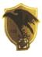 Identidad marcaria original, año 1916.
Identidad marcaria, año 1937.
Marca diseñado por Paul Rand, año 1961
Identidad marcaria actual, año 2003.
Fuente de consulta: http://www.100ups.com/espanol/features/leaders4.html
En algunas otras ocasiones nos es posible analizar la evolución gráfica de una marca y la consecuencia de ello. La marca UPS es un buen ejemplo de ello, PepsiCola es otro y Nike uno más; cada uno de ellos evoluciona hasta lograr una síntesis en sí mismo. La marca de Paul Rand para United Parcel Service se le ha despojado de formas innecesarias, no porque haya sido mal concebido, sino que se ha transformado para adaptarse a las nuevas necesidades de la información publicitaria, en este sentido la economía y la simplificación visual hacen su parte del trabajo y toda proporción guardada, es tal y como el profesor Mariano Baños -respecto a la publicidad- lo ha enunciado: “A los 10 minutos de haber visto una batería de 15 espots, sólo recordaremos dos de ellos. ¡Y extractados!
Identidad marcaria.
Símbolo de sustitución.
Nike es un buen ejemplo en donde la simplificación se da por la sustitución del símbolo por el nombre. El método se reconoce como mnemotécnico debido al uso permanente y la repetición constante de la paloma y el nombre, el signo lingüístico y el signo icónico respectivamente, ha permitido que este último tome el lugar del primero. Lo sustituye en la medida en que lo representa, lo evoca, porque están indisociablemente vinculados a él. Otros ejemplos son: el círculo y la estrella de Mercedes o el cocodrilo Lacoste, la manzana de Apple, etcétera.
Sin embargo, esta sencillez ajusta sus formas a un diseño geométrico, de la misma manera y como lo vimos ya con el Partenon y en la obra de Pablo Picasso. Iniciemos pues nuestro análisis geométrico de la marca Adidas:
En el primer análisis se observan algunas coincidencias aleatorias entre los tamaños y las proporciones, y en la siguiente lámina se encuentran todos los trazos respectivos.
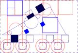
A continuación detallaré algunos de ellos con mayor precisión.
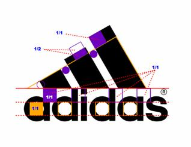
La forma gráfica se presenta como un triángulo escaleno colocada sobre una tipografía. Es de llamar la atención como coinciden segmentos en la tipografía con el grafismo en la parte superior.
Hemos llegado hasta aquí con el análisis del núcleo geométrico de la identidad marcaria; como se habrán podido percatar es un tema basto en contenido y los niveles sobre los que se puede profundizar son numerosos y muy interesantes también; por lo que invito al lector a ir descubriendo estas “capas” para comprender y descubrir el diseño gráfico de la identidad de marcas, mismo que queda en muchas ocasiones oculto a los ojos del observador convencional.
Fuentes de Información.
Revista ¡Despertad!, Septiembre de 2006.
Saldaña Hernández, Juan Carlos. Análisis de la forma. Trabajo de investigación de la obra de Pablo Picasso. Realizado durante los estudios de la maestría en Artes Visuales en la Academia de san Carlos, UNAM. México D.F. 1995.
http://psicogeometria.com/arte.htm
Encontrarás información relativa a la “Geometría sagrada” y algunos análisis de obras tales como Leda Atómica de Salvador Dalí así como del pintor impresionista francés Georges Pierre Seurat.
http://www.portalplanetasedna.com.ar/divina_proporcion.htm
El Hombre de Vitruvio. La Divina Proporción. Conceptos Para Enteder Mejor: El Código Da Vinci.